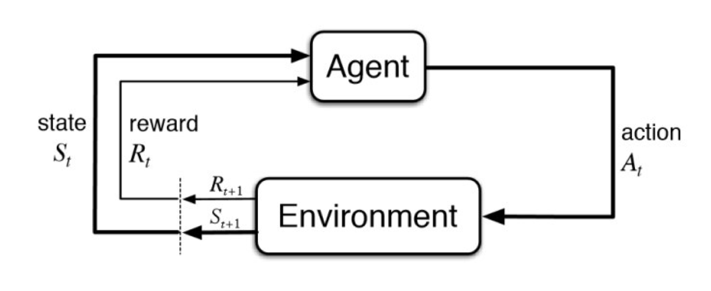

上图介绍了强化学习里面agent跟environment的交互，马尔可夫决策过程是强化学习的一个基本框架，可以表示上图的这个交互过程。
在介绍马尔可夫决策过程 (Markov Decision Process，MDP) 之前，先给大家梳理一下马尔可夫过程 (Markov Process，MP)、马尔可夫奖励过程 (Markov Reward Processes，MRP)。这两个过程是马尔可夫决策过程的一个基础。
马尔可夫过程MP
Narkov Property
如果一个状态转移是符合马尔可夫的，那就是说一个状态的下一个状态只取决于它当前状态，而跟它当前状态之前的状态都没有关系。
如果某一个过程满 足马尔可夫性质 (Markov Property)，就是说未来的转移跟过去是独立的，它只取决于现在。马尔可夫性质是所有马尔可夫过程的基础。
Markov Process/Markov Chain
引入状态转移矩阵，描述一个节点到其他所有节点的概率
Example of MP
给定马尔可夫链以后，就可以对这个链进行采样，然后就可以得到一系列的轨迹
马尔可夫奖励过程MRP
马尔可夫奖励过程 (Markov Reward Process, MRP)是马尔可夫链再加上了一个奖励函数。奖励函数R是一个期望，状态数有限，R可以是一个向量。引入折扣银子discount factor γ，减小无穷远后的阶段对当前状态的影响。
Return and Value function
- Horizon指一个回合的长度。
- Return说的是吧奖励进行折扣后所获得的收益。
- state value function是return的期望。
Bellman Equation
V(s)=R(s)+γs′∈S∑P(s′∣s)V(s′)
写成矩阵形式
⎣⎢⎢⎢⎢⎡V(s1)V(s2)⋮V(sN)⎦⎥⎥⎥⎥⎤=⎣⎢⎢⎢⎢⎡R(s1)R(s2)⋮R(sN)⎦⎥⎥⎥⎥⎤+γ⎣⎢⎢⎢⎢⎡P(s1∣s1)P(s1∣s2)⋮P(s1∣sN)P(s2∣s2)P(s2∣s2)⋮P(s2∣sN)⋯⋯⋱⋯P(sN∣s1)P(sN∣s)2⋮P(sN∣sN)⎦⎥⎥⎥⎥⎤⎣⎢⎢⎢⎢⎡V(s1)V(s2)⋮V(sN)⎦⎥⎥⎥⎥⎤
即
V=R+γPV
求得解析解
V=(I−γP)−1R
由于矩阵求逆过程复杂度是O(N3)，所以解析解的求法只适用于很小量的MRP。
Iterative Algorithm for Computing Value of a MRP
动态规划方法、蒙特卡洛方法（采样）、时序差分学习的方法。
蒙特卡洛方法
随机生成轨迹，求return，然后取平均。
动态规划方法
通过（bootstrapping）自举的方法，不停迭代Bellman equation，让它最后收敛，变化很小的时候就可以结束了。
马尔可夫决策过程（MDP）
相对于 MRP，马尔可夫决策过程 (Markov Decision Process)多了一个 decision，其它的定义跟 MRP 都是类似的。
- 状态转移变成P(st+1=s′∣st=s,at=a)。
- 价值函数变成R(st=s,at=a)=E[rt∣st=s,at=a]。
Policy in MDP
Policy定义了在某一个状态应该采取什么样的动作。
π(a∣s)=P(at=a∣st=s)
Value function for MDP
引入了一个Q 函数 (Q-function)。Q 函数也被称为action-value function。Q 函数定义的 是在某一个状态采取某一个动作，它有可能得到的这个 return 的一个期望
qπ(s,a)=Epi[Gt∣st=s,At=a]
然后进行加和，就可以得到价值函数
vπ(s)=a∈A∑(a∣s)qπ(s,a)
参考资料
Easy-RL_v1.0.0